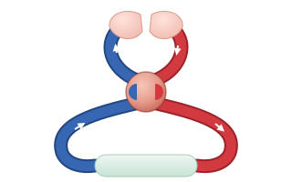

Key questionWhy does blood pass through the heart twice on every trip around the body?
0% of this lesson done

Part 1
What I Need to Know
This lesson puts the heart and the vessels together. You will follow a single red blood cell all the way around the body and back, and find out why it has to pass through the heart twice. It works toward the General Biology 2 competency on transport and circulation (STEM_BIO11/12-IVa-h-1).
By the end of this lesson, you can:
trace the path of blood through the heart, the lungs and the body in the correct order;
compare the pulmonary circuit with the systemic circuit;
explain where blood gains and loses oxygen, and what color blood really is;
predict where blood goes next from any point in the circulation.
How to work through the lesson
Session 5 (about one hour): Parts 1 to 4, then Readings 1 and 2 of Part 5.
Session 6 (about one hour): Readings 3 to 5, then Parts 6 to 9.
Answer every question before you move on, and select any word with a dotted underline to see what it means.
Your work is saved on this device as you go.
Part 2
What I Know
Answer these five questions before you study the lesson. You get one try each, and the lesson tells you where each idea is taught.
Question 1
Which chamber pumps blood into the pulmonary circuit?
Question 2
What do the pulmonary veins carry?
Question 3
How many times does blood pass through the heart on one full trip around the body?
Question 4
What color is blood that carries little oxygen?
Question 5
Carbon dioxide made in a muscle of your toe leaves the body through the
Part 3
What’s In
A quick look back at Lessons 1 and 2.
In Lesson 1 you saw that the right side of the heart pumps blood to the lungs and the left side pumps blood to the body. In Lesson 2 you followed blood from arteries through capillaries into veins, and saw that capillaries are the only place where substances pass between blood and cells.
In this lesson you join these ideas into one picture: two circuits of vessels, each with its own capillary beds, joined at the heart.
Practice
Which vessel carries blood away from the right ventricle?
Part 4
What’s New
Four models, and two predictions.
Below are four models of how blood might travel around the body. Each arrow shows the direction of flow. Look at them carefully before you answer.
Four possible models of the path of blood. Only one is correct.
These two questions are not scored. You will answer them again in Part 7.
Your prediction
Look at the four models above. Which one shows how blood travels in the human body?
Your prediction
What color is the blood inside your veins?
Part 5
What Is It
Five short readings. Readings 1 and 2 are for Session 5, and Readings 3 to 5 for Session 6.
Reading 1 of 5
Two circuits joined at the heart
Humans have . Blood flows through two circuits of vessels that are joined at the heart. The carries blood from the right ventricle to the lungs and back to the left atrium. The carries blood from the left ventricle to all the other tissues of the body and back to the right atrium (Betts et al., 2022, Section 19.1).
The two circuits are connected one after the other. All the blood that goes through one circuit must then go through the other. So on one full trip around the body, blood passes through the heart twice: once through the right side on its way to the lungs, and once through the left side on its way to the body.
Follow one red blood cell. It leaves the left ventricle through the aorta, travels through arteries to a capillary bed in, say, a leg muscle, and gives up oxygen there. It returns through veins and a vena cava to the right atrium, drops into the right ventricle, and is pumped through a pulmonary artery to the lungs. In a lung capillary it picks up oxygen. It returns through a pulmonary vein to the left atrium and drops into the left ventricle, ready to start again.
Why go back to the heart in between? Blood loses most of its pressure as it squeezes through the lung capillaries. In a fish, blood goes straight from the gills to the body at this low pressure. In humans, the blood returns to the left ventricle, which gives it a second, stronger push. This lets blood reach every tissue quickly, even the brain at the top of the body.
Double circulation, drawn as a simplified diagram. The lungs and the body tissues are each shown as one block of capillaries. Follow the red blood cell around one full trip.
Try this
Use “Next stop” to follow the cell for one full trip. How many stops does it make?
Compare with a model answer
Ten: left ventricle, aorta, body capillaries, venae cavae, right atrium, right ventricle, pulmonary arteries, lung capillaries, pulmonary veins and left atrium.
How many times does the cell pass through the heart in one full trip?
Compare with a model answer
Twice: once through the right side and once through the left side.
At which two stops does the oxygen level of the blood change?
Compare with a model answer
In the body capillaries, where it falls, and in the lung capillaries, where it rises.
Quick check
A red blood cell is in the aorta. How many times must it pass through the heart before it reaches a capillary in the lungs?
Reading 2 of 5
Comparing the two circuits
The pulmonary circuit is short. It only has to reach the lungs, which sit right beside the heart, and its vessels offer little resistance. The right ventricle therefore needs only a low pressure to push blood through it. This also protects the thin walls of the lung capillaries, which would leak at high pressure.
The systemic circuit is long. It reaches every organ from the scalp to the toes, so its resistance is much higher, and the left ventricle must produce a much higher pressure. This is the reason for the thick wall of the left ventricle that you saw in Lesson 1.
In one way the circuits are exactly equal: each minute they carry the same volume of blood. Because they are joined one after the other, whatever the right ventricle pumps must come back to the left side, and whatever the left ventricle pumps must come back to the right side. If one side pumped less than the other, blood would build up behind it.
The heart muscle does not take oxygen from the blood inside its chambers. It has its own vessels, the , which branch from the aorta just above the aortic valve and spread over the surface of the heart. Coronary veins return the blood to the right atrium. This coronary circulation is part of the systemic circuit (Betts et al., 2022, Section 19.1).
Table 3.1. The pulmonary circuit and the systemic circuit (Betts et al., 2022, Sections 19.1 and 20.5)
Feature
Pulmonary circuit
Systemic circuit
Pump
right ventricle
left ventricle
Blood goes to
the lungs
every other tissue, including the heart muscle
Blood returns to
the left atrium
the right atrium
The arteries carry
oxygen-poor blood
oxygen-rich blood
The veins carry
oxygen-rich blood
oxygen-poor blood
Length and resistance
short, low resistance
long, high resistance
Pressure from the ventricle
lower
much higher
Volume pumped each minute
the same in both circuits
the same in both circuits
In the capillaries, blood
gains oxygen and loses carbon dioxide
loses oxygen and gains carbon dioxide
Quick check
Compare the blood in a pulmonary artery with the blood in the aorta at the same moment. Which statement is correct?
This is the end of Session 5. In Session 6, start with Reading 3.
Reading 3 of 5
Where the blood changes
Blood changes in only two places, and both are capillary beds. In the lungs, each capillary runs along the wall of a tiny air sac. The air in the sac is rich in oxygen and the blood arriving from the right ventricle is poor in it, so oxygen moves into the blood by . Carbon dioxide moves the other way, from the blood into the air, and leaves the body when you breathe out (Clark et al., 2018, Section 39.2).
In the body tissues the gradients are reversed. Working cells use oxygen and make carbon dioxide. So in the body capillaries, oxygen diffuses out of the blood into the cells, and carbon dioxide diffuses from the cells into the blood.
Most of the oxygen in blood is carried by , a protein packed inside red blood cells. Hemoglobin picks up oxygen in the lungs, where there is plenty, and releases it in the tissues, where there is little.
The heart itself does not change the blood. Blood passing through the chambers leaves with the same amount of oxygen it brought in. The right side of the heart only ever holds oxygen-poor blood and the left side only ever holds oxygen-rich blood, because the septum keeps them apart.
Gas exchange in a lung capillary and in a body capillary. The arrows show which way oxygen and carbon dioxide diffuse.
Quick check
A brain cell releases carbon dioxide into the blood. Which route does that carbon dioxide take to leave the body?
Reading 4 of 5
What color is blood?
The diagrams in this module, like those in most textbooks, use red for oxygen-rich blood and blue for oxygen-poor blood. The colors are a code that makes the two kinds of blood easy to tell apart. They are not the real colors of blood.
Human blood is always red, because red blood cells are full of hemoglobin. When hemoglobin carries a lot of oxygen, the blood is bright red. When it has given up much of its oxygen, the blood is a darker red. Blood drawn from a vein into a sealed tube is dark red, not blue. It never turns blue anywhere in the body (Beytur & Yalmancı, 2022).
Every diagram and simulation in the module switches to real colors, in every lesson, until you switch back.
Then why do the veins under your skin look bluish? The answer is in the skin, not in the blood. Red light travels deeper into skin than blue light. Over a vein, much of the red light that reaches the vein is absorbed by the blood, so less red light comes back to your eyes than from the skin beside it. Blue light does not reach as deep, so it comes back about equally from both. Next to the skin around it, the vein looks bluish, even though the blood inside is dark red (Kienle et al., 1996).
A second caution about diagram colors. Red and blue show the two kinds of blood. They do not mean that one half of your body has oxygen-rich blood and the other half has oxygen-poor blood. Every organ, on both sides of the body, receives oxygen-rich blood in its arteries and returns oxygen-poor blood in its veins.
What you see through the skin, and what the blood really looks like. Based on Kienle et al. (1996).
Quick check
A nurse draws blood from a vein in a patient’s arm into a sealed tube. What color is the blood in the tube?
Reading 5 of 5
Predicting where blood goes next
Once you know the plan of the circulation, you can predict where anything in the blood will go: a medicine, a gas, or a blood clot. Two rules do most of the work.
Rule 1. After any capillary bed, blood returns to the heart before it reaches the next capillary bed. Lung capillaries are always followed by the left side of the heart, and body capillaries are always followed by the right side.
Rule 2. Blood from the body always enters the right atrium. Blood from the lungs always enters the left atrium.
Example: a nurse injects a medicine into a vein in the arm. The medicine travels in the vein to the superior vena cava, enters the right atrium, then the right ventricle, and is pumped through a pulmonary artery to the lung capillaries. Only after it returns to the left side of the heart is it pumped through the aorta to the rest of the body. So the first capillary bed the medicine reaches is in the lungs, not in the arm or the brain.
Example: oxygen from the air reaches a muscle in your toe. It enters the blood in a lung capillary, travels in a pulmonary vein to the left atrium and the left ventricle, and is pumped into the aorta. Arteries carry it down the leg to a capillary in the toe, where it diffuses into the muscle cells.
Quick check
A person breathes in a medicine as a spray, and it enters the blood in the lungs. Which heart chamber does it reach first?
Part 6
What’s More
Put the path in order, check four common ideas, and work out two “what if” cases.
Put the path in order
A red blood cell is in the left atrium. Arrange the steps in the order the cell passes through them. Use the arrow buttons to move a step up or down, then check.
Check these ideas
Decide whether you agree with each idea, then see what science says.
Common idea
“Blood goes from the heart to the lungs and then straight to the rest of the body.”
What do you think?
What science says
Blood returns to the heart after the lungs. The left ventricle then pumps it to the body at high pressure. Single-loop pathways like this one have been recorded among learners, including future teachers (Arnaudin & Mintzes, 1985; Pelaez et al., 2005).
Common idea
“Blood without oxygen is blue. It turns red when it meets oxygen.”
What do you think?
What science says
Blood is red in every vessel. Oxygen-poor blood is dark red, and blood drawn from a vein into a sealed tube is dark red, not blue. In one survey, about one in five high school students answered that blood is blue (Beytur & Yalmancı, 2022).
Common idea
“The systemic circuit is more important than the pulmonary circuit.”
What do you think?
What science says
The two circuits are connected one after the other and carry the same volume of blood each minute. Neither can work without the other. This idea has been recorded among learners (Özgür, 2013).
Common idea
“Oxygen-rich blood flows in the left half of the body and oxygen-poor blood in the right half.”
What do you think?
What science says
Red and blue in a diagram show the two kinds of blood and the two sides of the heart, not two halves of the body. Every organ on both sides receives oxygen-rich blood in its arteries and returns oxygen-poor blood in its veins. This idea has been recorded among learners (Özgür, 2013).
What if?
Use the two rules from Reading 5 to work out each case.
Practice 1
Suppose blood left the lungs and went straight to the body without returning to the heart. What would be the main problem?
Practice 2
A hiker climbs a high mountain, where each breath brings in less oxygen. In which vessels does the blood show the lower oxygen level first?
Part 7
What I Have Learned
A summary of the lesson, and a second look at your predictions.
Key ideas
Blood follows one continuous path made of two circuits. It passes through the heart twice in each full trip.
Pulmonary circuit: right ventricle → pulmonary arteries → lung capillaries → pulmonary veins → left atrium.
Systemic circuit: left ventricle → aorta and arteries → body capillaries → veins and venae cavae → right atrium.
Blood gains oxygen only in the lung capillaries and gives it up only in the body capillaries. The heart does not change the blood.
The pulmonary arteries carry oxygen-poor blood. The pulmonary veins carry oxygen-rich blood.
Both ventricles pump the same volume. The left ventricle works at a much higher pressure.
Blood is always red: bright red when rich in oxygen, dark red when poor in oxygen. Veins look bluish because of how skin reflects light.
Think again
Here are your two predictions from Part 4. Look at the four models again, then answer.
The four models again.
Think again
Look at the four models above. Which one shows how blood travels in the human body?
Think again
What color is the blood inside your veins?
Part 8
What I Can Do
Explain double circulation in your own words.
Explain the trip to a younger cousin
A Grade 5 cousin asks you: “How does the air I breathe get to my toes?” Write an answer in 5 to 8 sentences that a ten-year-old can follow.
Your answer should name the lungs, both sides of the heart and the capillaries in the toe, and should say what happens to the carbon dioxide made in the toe. Use one comparison from everyday life, such as a jeepney route or a delivery rider.
Part 9
Assessment
Ten questions on the whole lesson. You get one try each, then you see the answer and why.
Question 1
Which chamber pumps blood into the systemic circuit?
Question 2
What do the pulmonary arteries carry?
Question 3
A red blood cell leaves the right ventricle. Which chambers does it pass through, in order, before it returns to the right ventricle?
Question 4
Why do veins under the skin look bluish?
Question 5
Where does blood change from oxygen-poor to oxygen-rich?
Question 6
Why does the left ventricle produce a higher pressure than the right ventricle?
Question 7
How does the heart muscle get its oxygen?
Question 8
Which statement about the volume of blood in the two circuits is correct?
Question 9
A medicine is injected into a vein in the leg. Which heart chamber does it reach first?
Question 10
Which shows the systemic circuit in the correct order?
Your score
Answer the ten questions above to see your score.
Check yourself
Rate how well you can do each target now. If you choose “Partly” or “Not yet”, the module points you to the reading to review.
I can trace a drop of blood through the heart, lungs and body in the correct order.
Next: Lesson 4 explains the pressure that keeps all of this blood moving, and how the body controls it.
Answer key
Lesson 3: Two Circuits, One Loop
Item
Answer
What I Know 1
B. Right ventricle
What I Know 2
B. Oxygen-rich blood to the left atrium
What I Know 3
B. Twice
What I Know 4
C. Dark red
What I Know 5
C. lungs
Practice (What’s In)
B. Pulmonary trunk
Quick check, Reading 1
B. Once
Quick check, Reading 2
B. The pulmonary artery carries oxygen-poor blood at lower pressure. The aorta carries oxygen-rich blood at higher pressure.
Quick check, Reading 3
B. Brain capillary → vein → superior vena cava → right atrium → right ventricle → pulmonary artery → lung capillary → air
Quick check, Reading 4
B. Dark red
Quick check, Reading 5
B. Left atrium
Put the path in order
Mitral valve → Left ventricle → Aorta and systemic arteries → Capillaries in the body tissues (oxygen leaves the blood) → Venae cavae → Right atrium, then the tricuspid valve → Right ventricle → Pulmonary arteries → Capillaries in the lungs (oxygen enters the blood) → Pulmonary veins
Practice 1
B. The blood would reach the body at low pressure and move slowly, because it loses pressure while passing through the lung capillaries.
Practice 2
B. The pulmonary veins
Think again: Look at the four models above. Which one shows how blood travels in…
C. Model C
Think again: What color is the blood inside your veins?
B. Dark red
Assessment 1
D. Left ventricle
Assessment 2
B. Oxygen-poor blood from the right ventricle to the lungs
Assessment 3
A. Left atrium, left ventricle, right atrium
Assessment 4
B. Skin reflects red and blue light differently over a vein, so the vein looks bluish next to the skin around it.
Assessment 5
B. In the capillaries of the lungs
Assessment 6
B. The systemic circuit is long and has a much higher resistance than the pulmonary circuit.
Assessment 7
B. From the coronary arteries, which branch from the aorta
Assessment 8
C. Both circuits carry the same volume each minute, because they are connected one after the other.
Assessment 9
A. Right atrium
Assessment 10
A. Left ventricle → aorta → body capillaries → veins → right atrium